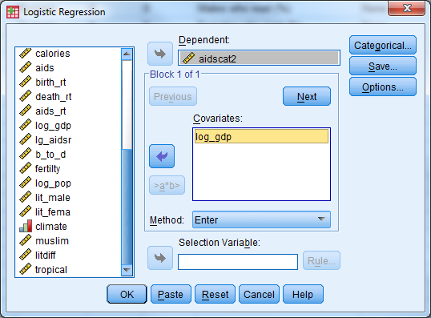
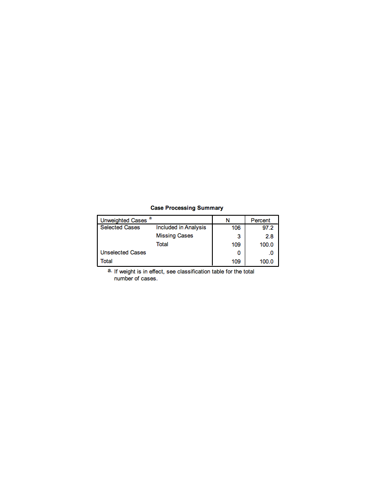
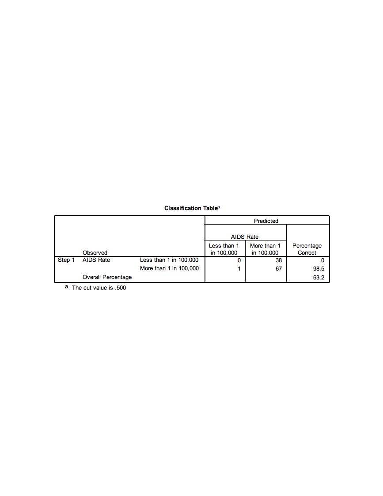
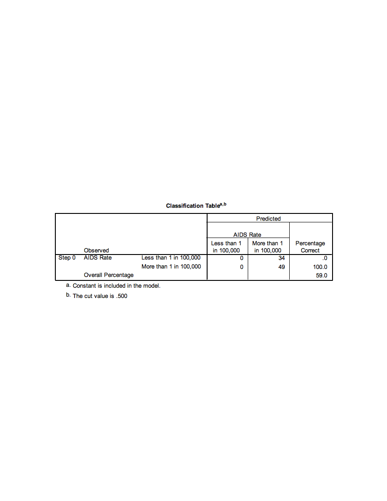
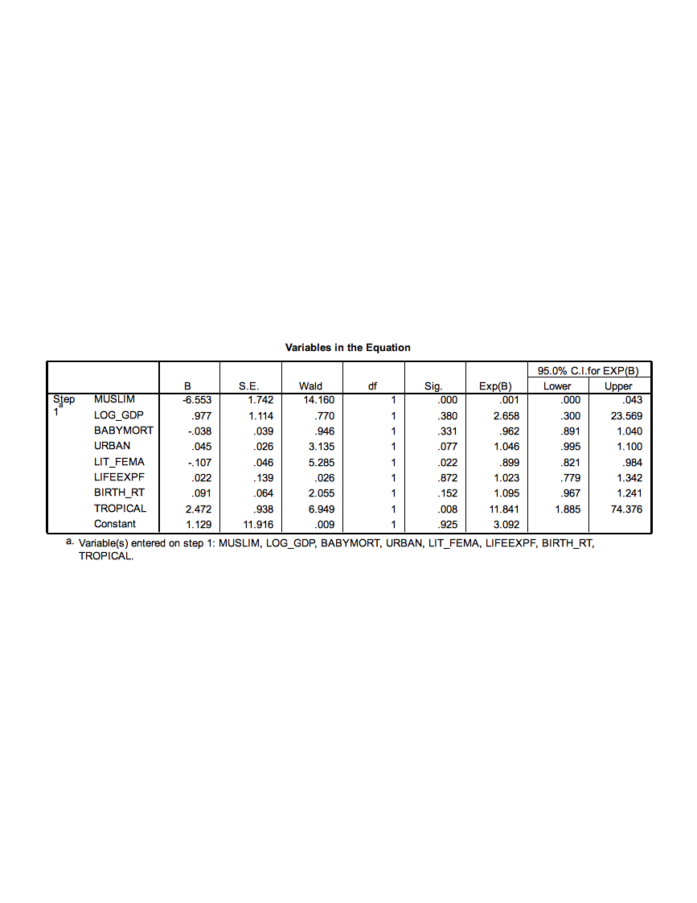

16 Exercise A5 – Case Study II: AIDS (Logistic Regression)
Open ExerciseA5_Data.sav
Background
The data set for this exercise contains information on 109 countries with a number of characteristics measured for each country. The goal of the exercise is to identify whether there may be characteristics of a country that are related to AIDS rate classification. Countries are divided into one of two AIDS rate groupings: 0 = Less than 1 in 100,000 or 1 = More than 1 in 100,000. The variable in the data which holds this information is called aidscat2.
We will fit several models with AIDS rate category as our outcome to identify potential significant predictors of AIDS rate classification. Because the model outcome is no longer a continuous measure, but instead binary, a logistic regression model will be used. The outcome for this type of model isn’t actually the values of the variable (0 or 1) but instead a calculation of the probability of having the value of one of the two categories of the outcome. The model has the form:
\[\ln\left( \frac{p}{1 - p} \right) = \beta_{0} + \beta_{1}x_{1} + \beta_{2}x_{x} + \ldots + \beta_{p}x_{p}\ \]
where p is the probability of the outcome variable being equal to 1. The \[\ln\left( \frac{p}{1 - p} \right)\] outcome is known as the log-odds.
Note: It is possible to change which level of the outcome variable the probability references, so you can model the probability that y=0 instead of y=1 if desired.
In all models for this exercise we will consider predicting the probability that a given country will have the higher AIDS rate classification (aidscat2=1). The objective of the models is to see whether the included predictors are significantly associated with the probability of having the higher AIDS rate classification.
Activity 1: Logistic Regression with a Continuous Predictor
For the first example, we will look at a simple example of fitting logistic regression with a continuous predictor. We will consider a single continuous predictor (log base 10 of the gross domestic product per capita, LOG_GDP).
Perform a simple logistic regression where ‘aidscat2’ is the outcome variable and ‘log_gdp’ is the independent/predictor variable.
Select Analyze - Regression - Binary Logistic’ to open the logistic regression dialogue box.
Select AIDSCAT2 as the binary dependent variable. Note that the category whose probability we want to model, “high” AIDS rate, is coded as a 1, and the other category, “low” AIDS rate, is coded as 0. SPSS automatically fits the highest valued category probability. If the opposite is desired the outcome variable should be recoded so the opposite category has a higher value. Select LOG_GDP as the only covariate, and click OK to fit the model. Results from fitting this model are included below.

The first table rovides some information regarding the cases (rows) used to fit that data. Note that three cases were lost in the analysis, due to missing data on the AIDSCAT2 variable. The final analysis sample size was 106.

The coding of the dependent variable is critical to understand. SPSS will model the probability that the “internal value” of the dependent variable is equal to 1. The “internal value” is the value that SPSS recodes the outcome to be to fit the model behind the scenes. This will not always match up to your original coding so check this table carefully. In our case the 0/1 internal coding that SPSS performs matches up with our original 0=less than 1 in 100,000 and 1=more than 1 in 100,000 coding so we will be modeling the probability of being in the “high” AIDS rate.

This initial classification table, located in “Block 0” of the output, shows how well we would do predicting by chance what the outcome will be (i.e., not using any covariates to predict the outcome). Because more countries have the higher classification, we would predict that classification for all of the countries, and we would be correct 64.2% of the time. This table isn’t all that informative by itself, we will compare it to a similar table in the next portion of the output.

This table, also in the “Block 0” portion of the output, shows the maximum likelihood estimate of the intercept term in a logistic regression model without any covariates. This is simply the computed log-odds of the dependent variable being equal to 1.

We’ll scroll down to the “Block 1” portion of the output, which will contain the maximum likelihood estimates of the parameters in our model. These estimates describe the relationship of LOG_GDP to the dependent variable (aidscat2). First, we examine the classification table for our outcome given that we are now considering the LOG_GDP variable as a predictor. This table is similar to predicted values in linear regression. For each country in the data set the predicted probability is computed using the fitted model and values of the country’s covariate. If the predicted probability is greater than 0.5 the country is classified into the ‘high’ AIDS rate group and if it is less than 0.5 it is classified into the ‘low’ AIDS rate group. These classifications are then compared with the actual observed classifications of the countries.

Note that we are actually doing a worse job of predicting the AIDS rate when using LOG_GDP as a predictor (63.2% correct vs. 64.2% correct when we don’t consider any covariates). The predicted probabilities can be saved in the SPSS data set as an option if desired.
Now, we examine the maximum likelihood estimate of the coefficient for LOG_GDP in the logistic regression model:

The estimate of the parameter that represents the coefficient for LOG_GDP in the model is equal to 0.491, with a standard error of 0.329. The Wald statistic reported by SPSS is the squared version of the T statistic (the coefficient divided by its standard error, squared), and is referred to a chi-square distribution with 1 degree of freedom. This Wald statistic has a p-value of 0.135, which suggests that we would not reject a null hypothesis that the coefficient for LOG_GDP is equal to 0. We really don’t have evidence of a significant relationship of LOG_GDP with the AIDS rate outcome.
However, if the relationship were significant, we would conclude that a one-unit increase in LOG_GDP results in an expected increase of 0.491 in the log-odds of being in the higher AIDS rate category. The parameter estimates represent additive changes to the log-odds. If exponentiated we get the more common odds ratio, which is the multiplicative change to the odds. Here the Exp(B) column holds the exponentiated esimates, for log_gdp the odds ratio is equal to 1.634. This value has the meaning that the odds of being in the higher AIDS rate category are multiplied by 1.63 with every one-unit increase in LOG_GDP.
Activity 2: Logistic Regression with a Categorical Predictor
Now, we’ll consider an example of analyzing a single categorical predictor with two levels, whether or not the country is predominantly muslim (MUSLIM). MUSLIM is coded as 1 = yes and 0 = no, which we would recommend for any two-level predictors.
Select ‘Analyze’->‘Regression’->‘Binary Logistic’ to re-enter the logistic regression dialogue box. Replace the log_gdp covariate with muslim. We need to identify the predictor as categorical so select the categorical button. Move the MUSLIM covariate into the ‘Categorical Covariates’ list.

Fit the logistic regression model by clicking on OK.

Let’s jump down to Block 1 in the output and first examine the classification table based on the model including the MUSLIM variable:

Note the substantial improvement in prediction accuracy by considering Muslim status! Now, we investigate the maximum likelihood estimate of the coefficient for MUSLIM:

The maximum likelihood estimate of the coefficient is -2.335, with a standard error of 0.537. The Wald statistic based on that estimate is 18.934, and the p-value for that Wald statistic is said to be 0.000 by SPSS (but should be reported as p < 0.001). This p-value suggests that we should reject the null hypothesis that the coefficient is equal to 0, which tells us that Muslim status has a significant relationship with the probability of being in the higher AIDS rate category. Specifically, when MUSLIM is equal to 1 (as opposed to 0), the log-odds of being in the higher category are expected to decrease by -2.335.
This estimate corresponds to an odds ratio of 0.097 (the exponential version of the coefficient), which says that the odds of having a higher AIDS classification for a Muslim country is 0.097 times the odds of having a higher AIDS classification for a non-Muslim country. The expected odds are multiplied by 0.097 when a country is Muslim as opposed to non-Muslim. We can also interpret this as reducing the odds of being in the higher AIDS rate category by 90.03% for muslim countries. Notice here, when we see a decrease in the odds (odds ratio less than 1) we report 1-Odds Ratio as the percentage (1-.097=.9003).
Activity 3: Logistic Regression with Multiple Predictors
In this analysis, we hope to find ways to categorize countries into one of two AIDS prevalence categories, based on other data for the countries. We will also discover which pieces of information are useful in predicting AIDS prevalence, and which appear to be unassociated with this prevalence.
Set up a logistic regression model to predict AIDS prevalence category (aidscat2) by considering the following predictors: muslim, log_gdp, babymort, urban, lit_fema, lifeexpf, birth_rt, tropical. Have SPSS report confidence intervals for the odds ratios. (This is found under the ‘Options’ button in the Logistic Regression dialogue box.)


Which predictors appear useful in predicting AIDS category? Do Muslim countries still have lower odds of being in the higher AIDS prevalence category when controlling for the relationships of the other predictors with the outcome? How much lower are the odds of a Muslim country being in the higher AIDS category?
The first table shows us that only 83 countries are used to fit this model, 26 were removed from analysis due to missing data on any of the variables used.
The first classification table (Block 0: Beginning Block) in the output shows you the result of classifying cases strictly by predicting them to be in the category with the largest percentage in the data set (in this case, you would predict a random case to be in the higher AIDS category, since 64.2% of the cases with a valid AIDS category are in the higher AIDS category). We would only be correct 59% of the time predicting by chance.

The ‘Model Summary’ table shows the –2 log-likelihood statistic for our model, as well as two analogs of R2 in the multiple regression context for a logistic regression model. These are approximations of R-squared in linear regression models, and should not be reported as the same thing; they should really only be used to compare the fits of competing models fitted using the same cases. The Cox & Snell R Square approximation suggests that our predictors explain about 43% of the variation in our response (not bad). The Nagelkerke R Square is a rescaled approximation that is constrained to fall between 0 and 1.

The Block 1 classification table shows an increase in the percentage that is correctly classified (89.2% vs 59%) using the predicted probabilities and a ‘cut-off’ classification probability of 0.5.
Let’s examine the estimated coefficients for the predictors included in our model:

The B column contains the estimated coefficients in the logistic regression model, which indicate the change in the log-odds of “success” (in this case, being in the higher AIDS category) associated with a one-unit increase in each predictor. So, for example, a one-unit increase in Muslim (or being in a Muslim country) decreases the log-odds of being in the higher AIDS category by 6.553, holding all other predictors constant.
The Sig. column provides the results of a significance test for each of the parameters (or coefficients) for the predictors in the model. This shows that Muslim, lit_fema, and tropical are significant predictors of being in the higher AIDS category. If a predictor is significant, changes in the predictor have a significant relationship with the log odds of “success.” The Exp(B) column indicates the factor by which the odds of “success” are multiplied when the predictor increases by one unit, holding the other predictors constant. So, for example, a one-unit increase in Muslim will multiply the odds of being in the higher AIDS category by 0.001, or reduce the odds of being in the higher AIDS category by 99.9%. The Exp(B) factor is known as an odds ratio. The 95% confidence interval for Exp(B) will not contain 1 if the predictor is significant. An odds ratio of 1 means that one-unit changes in the predictor multiply the odds of “success” by 1, or effectively do not change the odds.